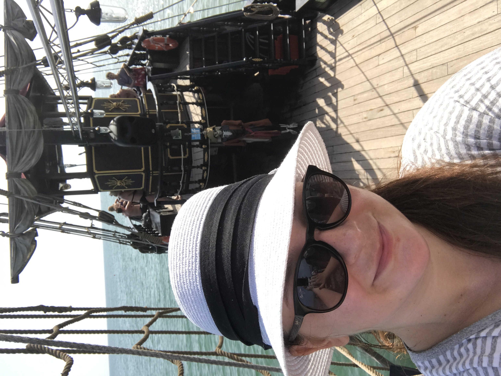
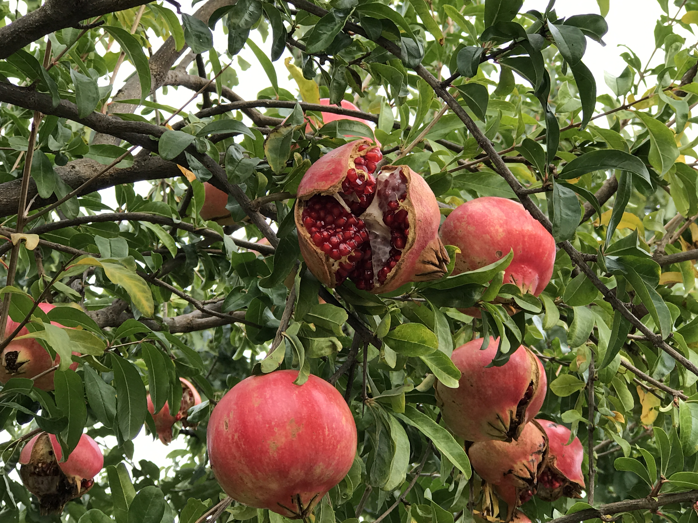

Білоруський період.
Дитинство
Народилася я в невеличкому місті Кобрин в Білорусії, в сім’ї моряка і математика-програміста. В віці 2-х місяців ми переїхали до Івано-Франківська, на цьому наполягав тато, бо хотів щоб його діти знали українську мову. Надалі ще було багато щасливих канікул там проведених, риболовля, збирання ягід і грибів, поїздки на водойми, по-вихідних ми гуляли в парку . Теплі спогади збереглися до тепер. Кращого дитинства й не побажаєш.
Івано-Франківський період.
Коротко про життя
В Франику я виросла, в мене було саме звичайне життя - школа, училище, друзі. Завжди улюбленим відпочинком були гори Карпати, там я проводила час спочатку з батьками, а в студентському віці вже з друзями. Найчастіше бували в Яремче, Микуличині, Ясиня, Чорній Тисі, Ворохті, Верховині, Кривопіллі. Це були прогулянки, походи з палатками або турбази. З появою сучасних гірськолижних спусків доброю традицією стало святкувати Новий рік саме в горах. Верховина
Освіта
Закінчивши училище отримала освіту бухгалтера, але вже на практиці зрозуміла, що мені ця робота не подобається і треба пробувати щось далі…
Робота
В 2005 році я закінчила один з Вузів і отримала таку бажану роботу в одному підрозділів звʼязку. Працювала на посадах від електромонтера до начальника телефонно-телеграфної станції. Загалом 7 років стажу.
Київський період.
Освіта
Перший раз я побувала в Києві в 2003 році й одразу зрозуміла, що я хочу жити там і колись ця мрія здійсниться (і здінилася). Спочатку я навчалась в КЕМТ їм. М.Островського, а потім в Державному університеті інфраструктури і технологіі. Отримала 2 освіти: Електромеханіка звʼязку Інженера-електрика звʼязку.
Робота
Працювала в АП «Укртелеком» спочатку в колл-центрі, а потім системним адміністратором по роботі з бізнес абонентами. Також був успішний досвід роботи ріелтором в АН «Благовіст».
Італійський період.
Трохи про переїзд і перші кроки.
З 2014 року я живу в Італії, в маленькому селі, неподалік містечка
Монтебеллуна, в 20 км від горів і 60 км від моря.
Мій переїзд
до Італії можна сказати був випадковим. Я приїхала сюди в гості на свята на 2 місяці і
залишилась
дотепер, як кажуть «Не було б щастя, та нещастя допомогло».
Італія дійсно прекрасна своєю природою, але найбільше мене вразили місцеві люди. Їхня доброта, відкритість,
ненавʼязлива підтримка просто вразили мене.
Тут в мене було 3 досвіду роботи, 2 - бейбісітером і одного раз спробувала працювати в офіціанткою нічному
клубі.
Робота нянькою мені сподобалась, і до цього часу, я з своїми колишніми роботодавцями в дружніх стосунках, але
діти
підросли й потреба в моїх послугах відпала.
А ось досвід роботи офіціанткою мені навпаки не сподобався, і треба було рухатись далі…
2021-2022 були навчальним роком на курсах італійської мови і історії.
Останніх 6 місяців щодня по 1-2 год. вивчаю англійську мову, натхнення прийшло після курсу з Upwork.
Хоббі.
- - Плавання.
- - Власноруч вирощую троянди .
- - Поїздки в гори.
- - Тварини. В мене живе 6 котиків, і ще 10-ма опікуюсь.
- - Щоденні прогулянки по 10 км.
Улюблені страви.
Італія на весь світ славиться своєю кухнею, за роки життя в цій країні в мене також зʼявилися улюблені страви. Ось мій топ-5:
- - Мідії в червоному соусі з підсмаженим хлібом;
- - Салат з селери з восьминогом;
- - Піцца божевільного;
- - Морепродукти в фритюрі з морквою та кабачком;
- - Панна кота з лісовими ягодами.